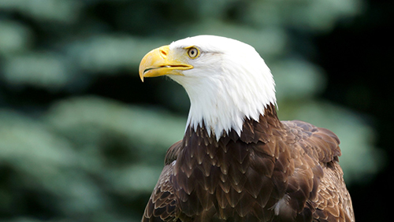

Con Đại Bàng

Đại bàng là một loài chim săn mồi cỡ lớn thuộc bộ Ưng, họ Accipitridae. Chúng sinh sống trên mọi nơi có núi cao và rừng nguyên sinh còn chưa bị con người chặt phá như bờ biển Úc, Indonesia, Phi châu... nhưng chủ yếu là Lục địa Á-Âu với khoảng 60 loài, còn lại 11 loài khác tìm thấy tại các lục địa còn lại bao gồm 2 loài